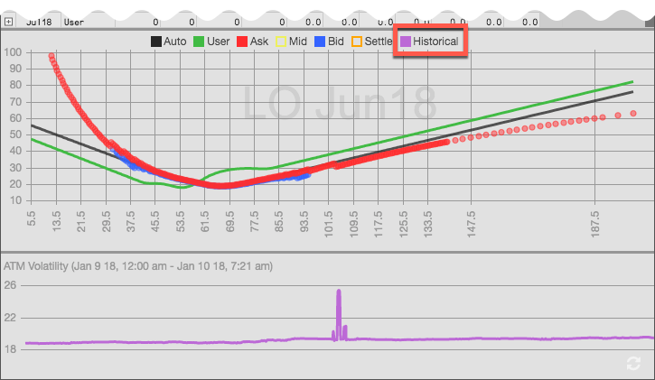
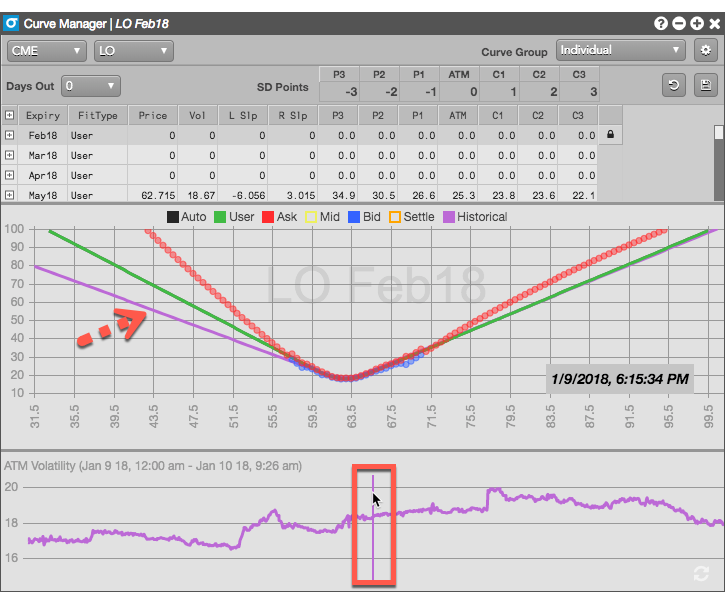
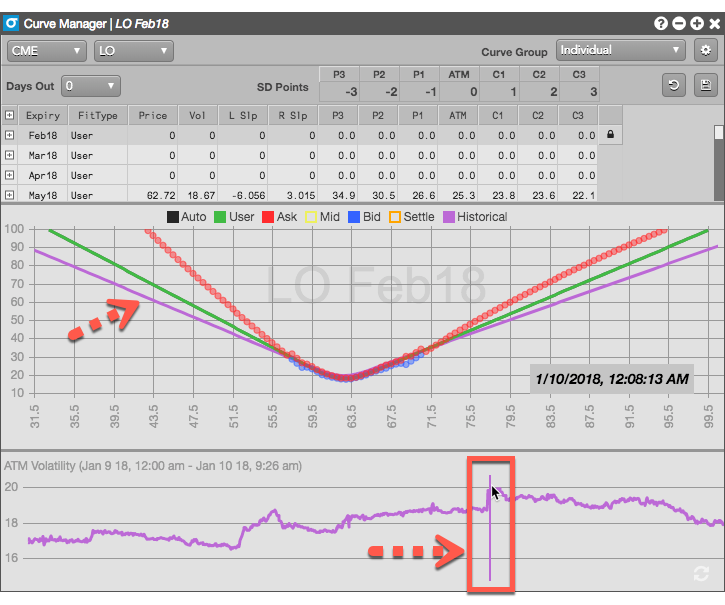

To display the volatility curve for a specific point in time,


To display the changes in the volatility curve over the current and previous sessions, click in the bottom pane and drag the mouse across the various data points. The historical vol curve updates dynamically as you move the cursor across data points.
